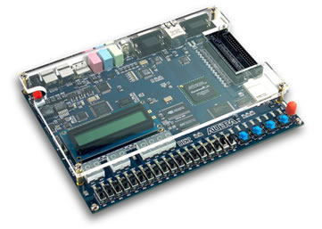
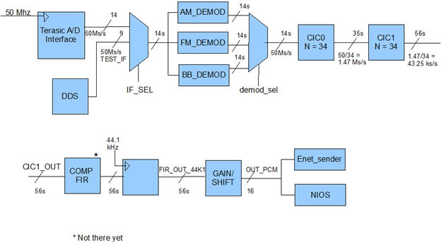
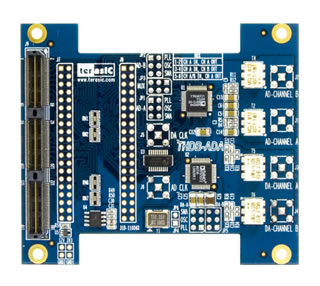
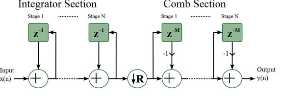
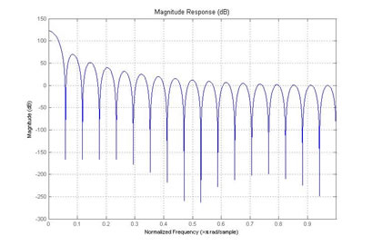
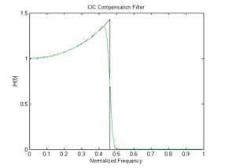
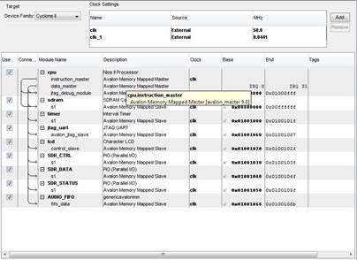
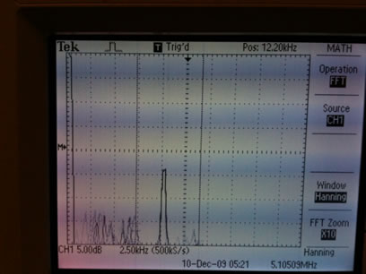

The purpose of this project is to create a software defined radio that can take in an AM or FM modulated signal from a common RF front end and demodulate it appropriately before sending the baseband signal to a computer over an Ethernet interface. The baseband signal would be encoded using a software compression algorithm to increase bandwidth efficiency across the Ethernet link.
Since an appropriate front end could not be reasonably obtained for this project, the input signal is simulated using 2 function generators that are capable of providing AM/FM modulation. The simulated input signal uses a 10.7MHz IF frequency, which was typical for AM/FM combination RF front ends. The IF signal is sampled using the high speed ADC on the Terasic ADA add-on for the DE2 development board. After IF digitization, all demodulation and signal processing are performed in the FPGA until the baseband signal is ultimately transmitted over Ethernet.
The project originally originated as a combination of a few ideas. One idea was trying to mimic the capabilities of a video place shifter. These devices take in a TV signal at one point and broadcast the signal so that it can be accessed over the internet from another location. It was decided that this required too much bandwidth to be within our capabilities. Instead an audio place shifter was conceived as a possible idea. Also, instead of sending the signal out over the internet, it would be broadcast over UDP which could allow for a computer program to later be written if other forms of streaming were preferred. The desire to do this as part of an SDR radio came from past experiences with internships and an RF class taken previously at Cornell.

http://en.wikipedia.org/wiki/File:Amfm3-en-de.gif
The two common modulations in broadcast radio are Amplitude Modulation (AM) and Frequency Modulation (AM) Amplitude Modulated (AM) radio and Frequency Modulated (FM) radio are used to allow for the transmission of multiple channels of signals over radio that can propagate for long distances. AM radio is transmitted by varying the amplitude of a carrier signal to match the amplitude changes in a signal (while the frequency stays constant). The carrier signal is at the frequency that the receiver must be “tuned to” to receive the signal. FM radio is transmitted by varying the frequency of the carrier based upon the input signal. Demodulation reverses this process to recover the original baseband signal. There are multiple demodulation techniques for each scheme with accompanying pluses and minuses. One limitation in this implementation was that the FPGA was not fast enough to generate a sine wave at 10.7MHz. However, a 10.7MHz square wave was achievable.
One method of demodulating AM is to multiply the IF signal by an LO which is at the IF carrier frequency. This recovers the baseband signal, but also creates a replica centered at 2*LO. The baseband signal can be isolated using a lowpass filter. This design implements a switching mixer, which performs the same operation, but only multiples the IF signal by 1 or -1, based upon a square wave at the IF carrier frequency. This method generates additional unwanted replicas of the signal, but these can still be filtered out.
The FM demodulator implemented a quadrature detector. In this scheme, the input signal is multiplied by a 90 degree phase shifted copy of itself. In an unmodulated signal, the output will be zero. When the signal is frequency modulated, the filtered output will recreate the original modulating signal. This scheme was again implementing using an internally generated square wave at 10.7MHz. This clock was XORed with the sign bit of the digitized IF signal. The output was a PWM signal where the pulse width was proportional to the difference in frequencies between the two signals. Low-pass filtering the PWM signal should reproduce the baseband signal.
Both modulation schemes require filtering around the baseband frequencies. In the case of audio transmission, the desired band is some subset of human hearing, 200Hz to 20kHz. An accurate digital filter at these frequencies is difficult to implement at 50MHz sampling rate. Furthermore, this high sampling rate produces an extraneous amount of data for signals that can be easily represented with a lower sampling rate. The sampling rate is bounded by the Nyquist Sampling theorem, which states that the sampling rate must be at least twice the highest frequency component. Before downsampling, the signal must be filtered to remove any signals above the Nyquist rate to prevent aliasing. The combined filtering/down sampling process is known as decimation.
The high speed signal processing components required many operations to be computing quickly and in parallel. For this reason, the demodulation and high-speed filtering segments of the design were implemented in hardware. Encoding of the baseband signal uses more a more serial, complex algorithm that is more easiliy implemented in software. We chose to create a Nios II processor core that would interface with the DSP hardware on the FPGA and perform the audio encoding.
This project should not violate any patents as it is almost all custom code. The Ethernet controller was made public by the writer and had the tooLame encoder been used, it was released under the LGPL license. In compliance with this license, all modifications made to the tooLame library are available in the source repository. Even though there are standards for parts of the project, it was not necessary to meet these standards. The Mpeg 1 Layer II encoding is based on ISO/IEC 11172-3 and the Ethernet controller is based on IEEE 802.3. UDP follows standard RFC 768.

The following signals are generated inside the FPGA:
CLK_10P7 – 10.7MHz square wave for LO
DRAM_CLK – Main 50MHz clock shifted -3ns for SDRAM interface
SAMP_CLK – 44.1kHz DDS generated square wave for audio sampling
TEST_IF – 1kHz DDS generated square wave for decimation filter testing
The system starts by using a Terasic A/D interface to sample the input signal. The Terasic A/D is configured to use a GPIO pin for its sample clock, which is driven by the 50MHz on chip clock. To add the ADC to the board, the plexiglass must first be removed, otherwise the addon card doe s not fit. Then a cable with an SMA interface needs to be used to transmit data to the board. The input to the ADC is at a rate of 50 Ms/s (Megasamples per second). The signal is then demodulated for the appropriate signal type whether amplitude modulation (AM), frequency modulation (FM). For test purposes, the BB_DEMOD demodulator passes through an unmodified IF signal. This mode requires using the DDS input because the A/D does not respond well within the passband of the decimation filters.

Terasic A/D Interface
As noted previously, the signal requires decimation for baseband processing. A Cascaded-Integrator Comb (CIC) is an efficient way of implementing decimation in a digital system because it does not require any multiplies.

CIC Block Diagram http://commons.wikimedia.org/wiki/File:Cic-decimator.svg
The frequency response of a CIC filter looks as follows:

CIC Filter Response

The demodulated signal is passed through 2 CIC filters to decrease the sample rate to a data rate that can be successfully put out over Ethernet. Using digital downconversion, each CIC filters acts as decimation filters to decreases the rate by a factor of 34 on each filter bringing the 50Ms/s signal down to 43.25kS/s.
Because of the drop across the pass-band, CIC filters are often accompanied by a compensating FIR filter which a response that approximates the inverse of the CIC droop. This filter can be placed after the CIC filter at the lower sampling rate, easing implementation. The compensating filter can also be modified to block frequencies below the desired audio frequency.
The CIC filter also introduces gain by a factor of (RM)^N, requiring additional bits on the output signal.
In this case, two cascaded CIC filters were used to improve the stability of the response. Each provides a decimation factor of 34 for a final sampling rate of 43.25kHz. Achieving exactly 44.1kHz from integer decimation factors would have required a different sampling frequency than 50MHz. Unfortunately, all PLL’s were utilized for other signals, and the frequency was too high to be generated using DDS. As a compromise, the 43.24kS/s signal is resampled using a 44.1kHz clock that is generated by a DDS.
The inputs and outputs of the system are binary offset, while all intermediate stages are built for twos-complement. The IF_SEL multiplexer and the GAIN/SHIFT block are responsible for adjusting bus-widths and center points of the signals.

SOPC Builder
A Nios II soft-core processor was created to perform baseband processing on the audio data. Audio samples are added to a FIFO by the hardware DSP section, which exports an Avalon Memory Mapped interface so that it can be read into the Nios in a reliable fashion. The Nios also contains control and status registers for future software configuration of an RF front end.
The original intention was to use an audio encoder to compress the signal into something that could be sent out over Ethernet at a higher quality. After much research, the encoder selected was the Mpeg I Layer 2 Audio Codec (often seen with the extension .mp2). This was a popular encoder in the 1990s and could most commonly be seen in Video CDs (VCDs) which were popular in the years between VHS and DVDs. This encoder was selected for quite a few reasons. Mp2 is a much simpler version of the mp3 protocol, it also is an open protocol and does not require the licensing that some other encoders do. The greatest advantage was that an open source example of the c code for this encoder was found (called the tooLame encoder). The particular version of this code was designed to work on a windows machine but seemed as though it could have been easily modified to work on a NIOS.
The mp2 encoding works on the principle that the human ear hears certain frequencies better than others and cannot detect certain missing frequencies. The audio spectrum is split into 32 subbands using a polyphase filter and then takes advantage of a psychoacoustic model based on the human ear and how people perceive sounds.
After much modification, the encoder was successfully run on the NIOS. It could pull data off the NIOS at 1152 bits at a time and encode them, unfortunately the speed was not anywhere close to what was necessary for practical real time encoding and the decision was made to eliminate the encoder from the project.
The current ethernet connection is based on code written as a collaboration by members of the ECE 5760 class. The original outline for the Ethernet code was written by Adam Shapiro. The code was edited and modified by Tim Sams. The UDP wrapper was written by John Wang.
Another option for doing the Ethernet communication is using the NIOS with some sample code provided. This idea was scrapped when it was determined that the encoding was not possible. Without compression, the NIOS could not transmit data fast enough for the needs of the system.
The way the system is designed, the system needed to be checked after the design of each individual step.
The first goal was to test the decimation filters and FIFO output. This was accomplished using the TEST_IF signal with the BB_DEMOD to input a baseband signal into the CIC filters. The output of the CIC filters was displayed on an oscilloscope using the VGA DAC on the DE2 and confirmed to be correct.
Next the FIFO interface to the Nios was tested by connecting a DDS signal to the FIFO input and continuously reading the FIFO register in software. This feature also worked, but seemed to run slower than desired.
The front end needs to be simulated using two function generators. One function generator creates the 10.7MHz carrier and receives its modulating input from the other signal generator. This signal can be demodulated successfully and monitored with the output put out through a VGA port and connected to an oscilloscope. The results from each CIC filter can also be observed with the final resulting output being very close to the desired. The oscilloscope is capable of displaying an FFT which allows for easy determination of the frequency bands that are being passed through.
Also, to make it easy to keep track of changes when coding and testing an SVN is used to keep track of changes and backup all files. This also makes it easier for multiple people to be working on the same files at once.
Since basically all the hardware is done inside the FPGA, this design could be easily repeated by someone with the same FPGA and AD board.

Oscilloscope Output
While not all parts of the original concept were developed, most of the key concepts are working. The device is able to take in an AM or FM modulated signal and demodulate it, downsample and filter it, and then gain and shift it so that it is ready for output.
Unfortunately, the design compromises made for the demodulators made their performance less than ideal. The AM demodulator is fairly noisy, and the FM demodulator is extremely sensitive to combinations of the modulation depth and the frequency of the modulation signal.
Some of these issues are likely a result of variations in the signal generators being used to simulate an RF front end. It was difficult to determine whether the noise source was the signal generators or some aspect of the demodulation scheme.
When displaying the output through the VGA port onto the oscilloscope, the output is at the frequency of the modulating signal. The output is exactly where it should be for an AM signal. Unfortunately for an FM signal it is slightly difficult to tell if it is working properly due to the fact that it is quite hard to finely tune the modulation on the signal source. In both cases, it is easier to judge performance by analyzing the FFT of the output data.
We were unable to get the UDP Ethernet connection working reliably. There was a timing issue in the state machine that communicated between the audio sample FIFO and the state machine that generated the UDP packets. The timing issue was in the handling of empty/full signals in the two FIFO's. As a result, the UDP packets received were usually malformed with various payload sizes instead of the correct, consistent size. The rest of the data was seen in Wireshark as raw ethernet frames.
When thinking about safety in this design, there is more concern for the safety of the FPGA and the A/D board than the safety of the user. There is very little risk of injury to the user since very little interaction with the board is required. To protect the FPGA it is always used on an anti-static mat and has a plexi-glass cover on it. Unfortunately to plug in the A/D board, the plexi-glass must me temporarily removed. To protect the board, it is unplugged when doing this.
There should be no interference with other people’s projects.
The project would be fairly easy to use if we were able to obtain the front end. Since we do not have this front end, using the device consists of setting up two signal generators connected together to fake an rf signal.
The laws concerning this device should be no different than that of any other place shifter. The user already has available free access to the AM and FM signal. All the user is doing is accessing the signal they have access to from another location. Since the device is only receiving and not over wireless, it should not violate any FCC legal restrictions.
The end result of this system fell short of expectations. Demoing the system with a fully working front end would have seemed a lot more meaningful than the system that was faked using two function generators. Tuning in to a real radio station would have been much more impressive than examining output on an oscilloscope. Also, the performance of the demodulators was worse than desired. Finally, it would have been nice if the encoding had been possible to do at an appropriate speed to allow the systems to compress large audio streams into data that could be broadcast out over UDP.
However, if doing this final project over, there is not much that we would choose to do differently. Perhaps not wasting the time on trying to get the .mp2 encoding working on the NIOS would be a good idea but then another open source encoding algorithm would have to be chosen which can run with very little processing.
If we chose to implement this project again, we would choose more robust demodulators, especially for FM. Bandpass filtering the input narrowly around 10.7MHz would allow aliasing downconversion and more processing to occur at a lower sample rate. This design change would ease the implementation of better demodulation schemes. Given more time, we would explore a hardware implementation of audio encoding and a create an RF front end.
Regardless of the final results, this project was a valuable learning experience in the applications of software defined radio and the tradeoffs involved.
See google code repository at
http://code.google.com/p/ece5760-sdr/
Appendix – Division of Labor
ADC/Demod/CIC filters – Jeff
Ethernet – Josh/Jeff
Encoder – Josh
Writeup – Josh/Jeff
Webpage – Josh
Toolame Encoder - http://toolame.sourceforge.net/
AN 455: Understanding CIC Compensation Filters
http://www.altera.com/literature/an/an455.pdf
CIC Filter Introduction
http://www.dspguru.com/dsp/tutorials/cic-filter-introduction
Basic Wikipedia page on detectors
http://en.wikipedia.org/wiki/Detector_%28radio%29